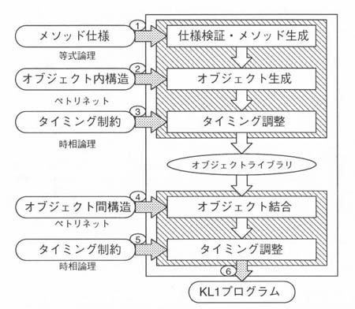

MENDELS ZONE は形式手法を用いて並列プログラムの開発を支援するシステムである。 従来より、ソフトウェアの高信頼性、高生産性を得るために、形式手法が有効 であるとの指摘があった。形式手法を用いることで、ソフトウェア仕様の自動 検証や調整、仕様からプログラムへの自動変換が可能となるためである。しか し、現実には (1) 検証・調整に要する多大な計算時間、(2) 変換されるプロ グラムの実行効率の低さが障害となって、実開発への適用は実質的に困難であ ると考えられていた。この問題に対してMENDELS ZONE では、
また、形式手法によって実システムを記述する際の問題点として (3) システ ムのさまざまな性質を単一の手法によって記述する難しさ、(4) 大規模シス テムを形式記述する手間の多さ、(5) 形式記述の理解性の低さなどが挙げら れる。これらについては、

MENDELS ZONEにおけるソフトウェア開発の流れ
図にMENDELS ZONE におけるソフトウェア開発の流れを示す。(1) では等式論理による 機能(メソッド)仕様が入力され、その正しさが並列に自動検証される。(2) で はそれらの構造がペトリネット表示される。(3) では時相論理による機能間の タイミング仕様が入力され、その仕様を満足するように(2) のペトリネットが 並列に自動調整される。(4) では複数のオブジェクトがペトリネットエディタ を用いて結合され、(5) ではオブジェクト間のタイミング仕様が入力され、 (4) のペトリネットが自動調整される。最後に(6) でこれらの仕様がKL1プロ グラムへ変換される。
MENDELS ZONE の評価を目的としてプラント制御エキスパートシステムを開発した結果、 約4,000行の形式記述から6,200行のKL1プログラムが生成され、約5人月を要し て目的のシステムが完成した。過去に同一システムを手作業により開発した際 のデータと比較すると、プログラムサイズは約34%増加しているが、開発者が 記述するコードの量は約15%減少している。開発工数は従来の約1/2で、特に デバッグ時間が1/12となっている。これにより、実開発におけるMENDELS ZONE の有効 性が確認された。